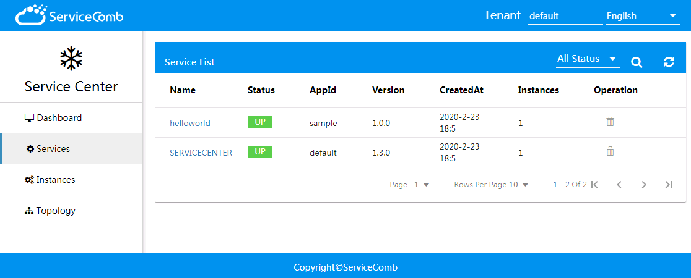

开发第一个微服务¶
开发一个HelloWorld服务¶
配置pom文件¶
创建一个空的maven工程。建议先配置dependencyManagement来管理依赖项，依赖项只需要引入solution-basic即可：
<dependencyManagement>
<dependencies>
<dependency>
<groupId>org.apache.servicecomb</groupId>
<artifactId>java-chassis-dependencies</artifactId>
<version>${java-chassis-dependencies.version}</version>
<type>pom</type>
<scope>import</scope>
</dependency>
</dependencies>
</dependencyManagement>
<dependencies>
<dependency>
<groupId>org.apache.servicecomb</groupId>
<artifactId>solution-basic</artifactId>
</dependency>
</dependencies>
solution-basic中已经包含了常见场景下开发Java-Chassis微服务所需的全部依赖项。
Java-Chassis 2.0版本还需要引入maven-compiler-plugin插件，使项目打包时保留方法参数名：
<build>
<plugins>
<plugin>
<groupId>org.apache.maven.plugins</groupId>
<artifactId>maven-compiler-plugin</artifactId>
<version>3.1</version>
<configuration>
<compilerArgument>-parameters</compilerArgument>
<encoding>UTF-8</encoding>
<source>1.8</source>
<target>1.8</target>
</configuration>
</plugin>
</plugins>
</build>
添加配置文件¶
Java-Chassis默认读取的配置文件名为microservice.yaml，存放在resources目录中。
文件内容如下，这份文件表示当前开发的是sample应用下的名为helloworld的微服务，版本为0.0.1。该微服务连接的服务中心地址为http://127.0.0.1:30100，监听8080端口。
APPLICATION_ID: sample
service_description:
name: helloworld
version: 1.0.0
servicecomb:
service:
registry:
address: http://127.0.0.1:30100
rest:
address: 0.0.0.0:8080
编写Main类¶
在工程中添加一个Main类，用于启动微服务实例：
package org.apache.servicecomb.samples;
import org.apache.servicecomb.foundation.common.utils.BeanUtils;
public class AppMain {
public static void main(String[] args) {
BeanUtils.init();
}
}
调用org.apache.servicecomb.foundation.common.utils.BeanUtils#init()方法会完成配置加载、Spring应用上下文加载、微服务注册等一系列启动流程。
编写REST接口类¶
最后在工程中添加一个REST接口类用于接收请求：
package org.apache.servicecomb.samples.service;
import org.apache.servicecomb.provider.rest.common.RestSchema;
import org.springframework.web.bind.annotation.GetMapping;
import org.springframework.web.bind.annotation.RequestMapping;
@RestSchema(schemaId = "hello")
@RequestMapping("/")
public class HelloWorldService {
@GetMapping("/hello")
public String hello() {
return "Hello world!";
}
}
添加日志配置文件¶
solution-basic引入了log4j2组件。如果想要看到运行日志，还需要手动添加一份日志配置文件，文件存放位置为resources\log4j2.xml，内容如下：
<?xml version="1.0" encoding="UTF-8"?>
<Configuration status="WARN">
<Appenders>
<Console name="Console" target="SYSTEM_OUT">
<PatternLayout pattern="%d{HH:mm:ss.SSS} [%t] %-5level %logger{36}[%L] - %msg%n"/>
</Console>
</Appenders>
<Loggers>
<Root level="info">
<AppenderRef ref="Console"/>
</Root>
</Loggers>
</Configuration>
启动服务¶
以上工作完成后，运行AppMain类即可启动微服务。在浏览器中打开本地服务中心的页面http://127.0.0.1:30103/，如果能看到helloworld服务的实例记录，则表示启动成功。如下图所示：

访问http://127.0.0.1:8080/hello，可以得到helloworld服务的响应"Hello world!"。至此，第一个Java-Chassis微服务开发完成。
补充说明¶
上文以Spring MVC开发风格来编写helloworld服务的REST接口类，目前Java-Chassis提供了三种REST接口类开发风格：
- Spring MVC
- JaxRS
- POJO
Spring MVC和JaxRS适合REST接口开发。 POJO是通常说的RPC，适合于进行内部接口开发。java-chassis允许在一个微服务里面混合使用上述开发方式，并且可以使用完全一致的方式，比如RestTemplate或者POJO的方式访问不同类型的服务，所以开始之前，可以根据熟悉程度，选择任意一种开发方式即可。java-chassis的开发方式和通信方式是完全解耦的，因此不同的开发方式并没有性能上的差异。
开发者也可以通过如下方式快速构建一个项目：
下载samples项目。java-chassis提供了大量的示例代码，这些示例代码可以通过servicecomb-samples获取。
使用archetypes生成项目
archetypes是maven提供的一种机制，对于使用maven的用户，可以在项目里面配置插件，生成项目。java-chassis提供了多个archetypes供开发者使用，详细参考链接
使用脚手架生成项目
脚手架提供了一个图形化向导，通过向导可以快速构建项目，参考链接。